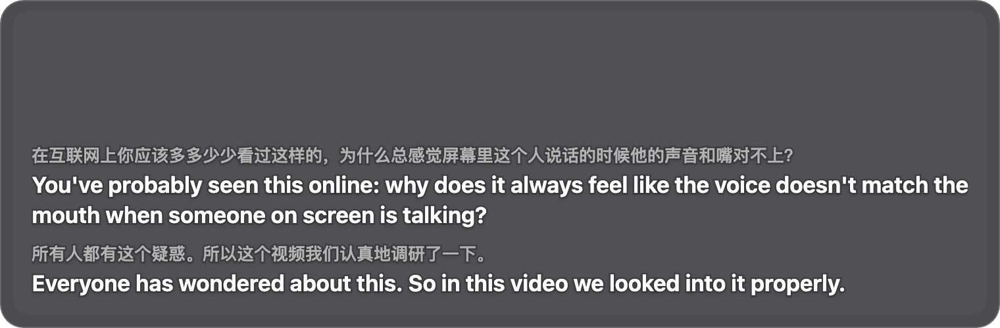
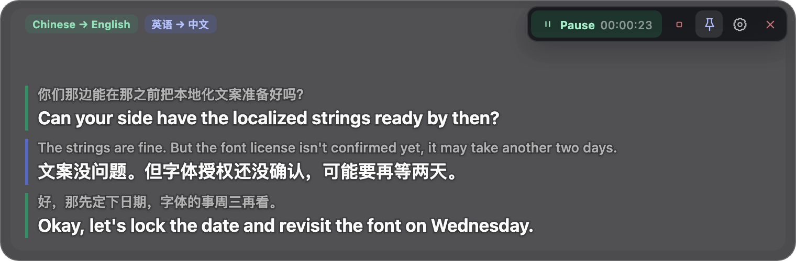
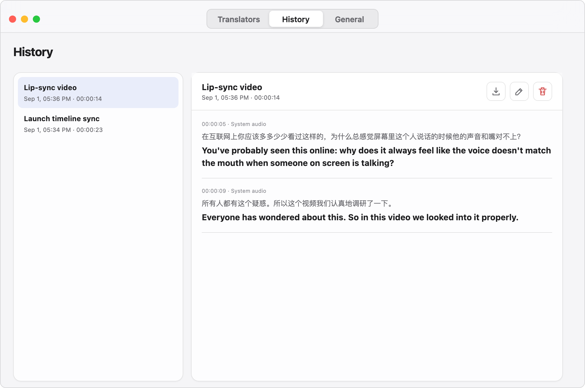
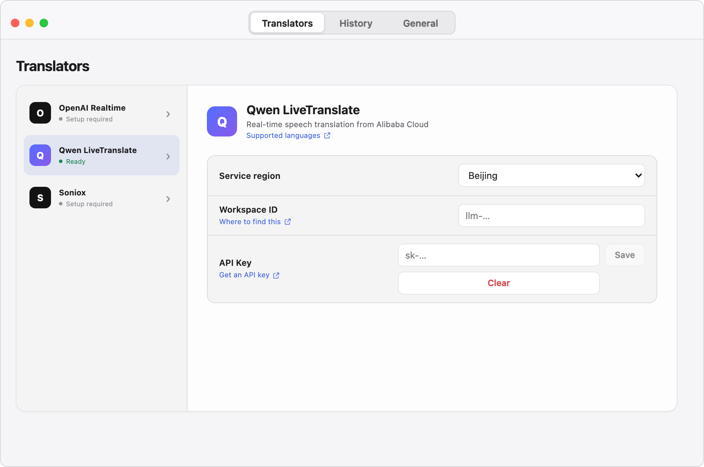
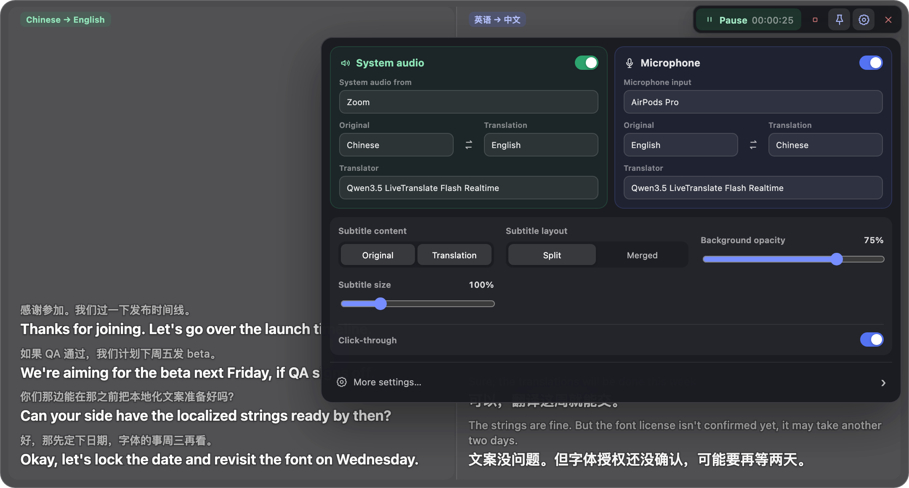
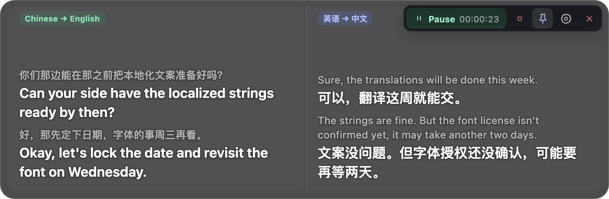

Watching a video看视频
A foreign video with no subtitles? Turn on OverLingo and show the original, the translation, or both. 外语视频没字幕？打开 OverLingo，原文译文任意显示。

In a meeting开会
Speak your own language. Two-way subtitles, in a split or merged layout. 直接使用母语交流，使用分栏或合并模式，显示双向翻译字幕。

History历史
The original and translation of every session are saved on this machine. Export or delete them any time. 每次会话的原文译文都会保存在本机。可随时导出或删除。
Three steps三步开始
-

-
Pick what to capture选择捕获对象
Capture system audio and the microphone at the same time. On macOS you can even capture a single app, such as Zoom. Plenty of subtitle options to tweak, too. 可同时捕获系统音频和麦克风，在 macOS 上甚至可以单独捕获 Zoom 等应用。还有丰富的字幕配置选项。

-
Start!启动！
That's it — enjoy. 大功告成，尽情享用。

Lightweight. No account, no telemetry, no relay server. Open source under the MIT license. 轻量。无账号、无遥测、无中转服务器。MIT 协议开源。
Questions常见问题
- Does it need the internet?需要联网吗？
- Yes. Only online translation providers are supported for now.需要。目前仅支持在线翻译服务商。
- Does it cost anything?需要付费吗？
- The app is completely free. Translation uses your own key and is billed at the provider's rates.应用完全免费。翻译服务使用你自己的密钥，按照服务商的价格计费。
- Which languages can it translate?翻译支持哪些语言？
- Chinese, English, Japanese, Korean, Spanish, French, German, Vietnamese, and more. It depends on the provider.包括中、英、日、韩、西、法、德、越南语等。具体取决于服务商。
- Does Windows support capturing a single app?Windows 平台支持捕获指定应用吗？
- Not yet.暂不支持。
- Is my audio saved?音频会被保存吗？
- No. The subtitle text is saved on this machine, where you can view, export, or delete it any time.不会。字幕文本会被保存在本机，可以随时查看、导出和删除。
- What permissions does it need?需要什么权限？
- System audio recording and microphone access.系统音频录制权限和麦克风权限。